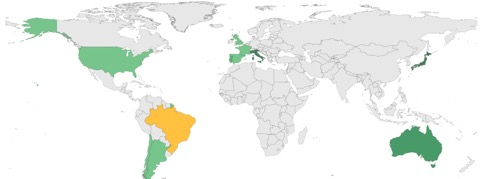

COTTO E VIAGGIATO
I flussi migratori ricostruiti grazie alla diffusione dei piatti tipici
di Daniele Campisano, Gianmarco Giannelli e Stefano Mazzuca
Chi pronuncia la parola “cultura” riferita a un popolo non può in alcun modo non pensare ai piatti tipici propri della tradizione. E in un mondo sempre più liquido, in cui i popoli si muovono, emigrano, si confondono e si raccontano sui social network, le foto dei cibi postate su Instagram possono dire molto sulla capacità dei popoli di integrarsi.
È possibile ricostruire i movimenti migratori a partire dal numero di fotografie postate sui social scattate ai piatti tipici di una cultura in un Paese? Cosa può raccontarci Instagram sull’immigrazione in Germania o i rapporti tra Cina e Giappone? Per rispondere a queste e altre domande abbiamo raccolto su Instagram una serie di post relativi al cibo, all’interno della tendenza che prende il nome di “foodporn”, e geolocalizzandoli (in modo da determinare in maniera precisa il luogo in cui è stata scattata la foto), abbiamo cercato di rintracciare un rapporto tra il numero di foto dei piatti, raccolti per nazionalità, e i flussi migratori del passato capaci di spiegarne la diffusione in uno specifico Paese.
Dati alla mano, l’immigrazione è, in particolar modo nell’ultimo secolo, uno dei fenomeni caratteristici della società. Se nel secondo dopoguerra, le importanti migrazioni nel mondo hanno dato forma a una serie di comunità che ancora oggi definiscono lo scenario geopolitico mondiale, è anche vero che, in base ai numeri dell’ultimo International Migration Report delle Nazioni Unite, l’immigrazione è un fenomeno che coinvolge ben 244 milioni di persone e che il trend, nell’ultimo decennio, è aumentato del 41%. Le cifre sono senza dubbio impressionanti e ci mettono di fronte alla necessità di confrontarci con il fenomeno, in generale, ma anche con il suo risvolto più vicino a noi in quanto cittadini ed esseri umani, ovvero l’integrazione degli stranieri nella realtà del Paese di cui facciamo parte.
Dal quartiere alla tavola
Poiché l’integrazione degli stranieri nei vari Paesi è stata misurata, ad esempio, dal punto di vista urbanistico, concentrandosi sulla separazione netta di quartieri popolati su base etnica (pensiamo alla comunità afroamericana di New York che aveva la sua roccaforte a Harlem o, ancora, alle banlieues francesi, in cui convivono le minoranze etniche idealmente separate dai francesi), ci siamo chiesti se non vi fosse un principio di integrazione che più efficacemente si distribuisce all’interno delle popolazioni e supera ogni barriera e pregiudizio perché agisce sulla parte del corpo che accomuna tutti, indipendentemente dalla fazione politica: il palato. Abbiamo pensato che il cibo, la contaminazione culinaria, l’aggiunta di una spezia orientale in un piatto tipico della tradizione occidentale, potessero dare prova in maniera più empiricamente rilevante del livello con cui straniero e autoctono sono giunti a comunicare. Non solo, la presenza massiccia di piatti di un determinato Paese può essere un indicatore affidabile di un flusso migratorio del passato che ne spieghi la diffusione proprio in quella determinata parte del mondo. Interrogato sulla legittimità del nostro tentativo di attribuire all’aspetto culinario la capacità di essere indicatore fondamentale dei rapporti tra comunità nella storia, il Professor Pietro Bevilacqua (storico, fondatore dell’istituto “Imes” e direttore della rivista “Meridiana”) risponde che “l’aspetto culinario è la prima attività economica dell’uomo, fondamento della civiltà e della cultura assieme alla religione” e che è, quindi, da prendere necessariamente in considerazione in un discorso che riguarda il rapporto di una comunità con una cultura straniera. “Gli immigrati – afferma il Professor Bevilacqua – cercano di difendersi dall’estraneità quando arrivano in Paesi stranieri e la forma più profonda della difesa di un’identità passa dal legame con la propria cultura e il cibo rappresenta una parte estremamente importante in questo tentativo di difesa”. Sull’integrazione, il Professore ci dice che “una volta integrato, l’immigrato si sente a suo agio per stabilire un rapporto con l’altro, un rapporto che viene simbolizzato dal gesto dell’offerta di un piatto, ed è lì che si pongono le basi per una integrazione tra culture”. Ma come tutte le dinamiche umane, anche questa richiede tempo, afferma il Professore che “il fattore tempo gioca un ruolo fondamentale all’interno della dinamica di integrazione in quanto vi sono una totalità di stratificazioni storiche da tenere presenti nella ricostruzione”. Dello stesso parere è anche lo chef stellato (e esperto di cucina) Marco Bistarelli che, interrogato sul ruolo della cucina nella definizione identitaria, afferma: “La cucina è tutto. Basta pensare a questo: quando viaggiamo, la nostra percezione della cultura del Paese in cui ci troviamo passa dai mercati, dai ristoranti, dalle materie prime che vediamo esposte, cucinate e abitualmente mangiate. I mercati ci parlano delle priorità sociali e rurali e ci spiegano il passato del Paese, i popoli che sono passati da lì e hanno contribuito alla sua formazione, a dispetto di una globalizzazione che tende ad appiattire le differenze”.

Un mondo di piatti
La mappa rappresenta i flussi migratori delle ricette tipiche. Per realizzarla, il lavoro del team si è diviso in tre fasi: nella prima, abbiamo raccolto tutte le ricette tipiche divise per Paese di provenienza, avvalendoci della sezione relativa al cibo di Wikipedia. Nella seconda fase, abbiamo cercato sul social network Instagram tutte quelle foto che avevano come commento un hashtag (menzione) che citasse una di quelle ricette: ne abbiamo ricavate circa 70.000 da 130 Paesi diversi (di cui 2/3 complete di coordinate e, quindi, geolocalizzabili) nel corso di 2 mesi circa. In ultimo luogo, sempre dai dati di Instagram, abbiamo raccolto i dati relativi alla posizione geografica dell’utente nel momento in cui aveva pubblicato la foto; in tal modo, è stato possibile geolocalizzarlo e produrre un database che sostituisse i nomi dei Paesi alle coordinate fornite dal social, per poter produrre una matrice in cui ogni Paese fosse legato a tutti gli altri dal numero di ricette menzionate. Lo stesso lavoro è stato fatto anche per quanto riguarda il dato informativo delle migrazioni.
Sushi brasiliano
E tra i dati spesso si nascondono storia interessanti. Come quella suggerita dal numero molto alto di ricette giapponesi in Brasile. Il dato si è rivelato tutt’altro che casuale e per comprenderne le ragioni dobbiamo tornare indietro nel tempo, all’inizio del ‘900. È infatti del 1905 un rapporto del Ministro plenipotenziario giapponese in Brasile, Fugashi Suguimura, in cui afferma che “proibita l’entrata in Australia, discriminati negli Stati Uniti, perseguitati in Canada ed ora limitati anche nelle Hawaii e nelle isole del Pacifico, i nostri coloni lavoratori troveranno nello Stato di San Paolo una vera felicità e un vero paradiso”. Sussistono, infatti, tra Brasile e Giappone, degli accordi stipulati in vista di un aumento di manodopera agricola per la coltivazione del caffè di cui il Brasile aveva fortemente bisogno. Il primo sbarco di coltivatori nipponici in Brasile del 18 giugno 1908 è ricordato e celebrato nel Paese sudamericano che ospita la più grande comunità nipponica nel mondo. In cento anni, le tradizioni giapponesi si sono radicate così tanto nella comunità brasiliana che i piatti più postati, dopo le prelibatezze nazionali, sono il sushi, il sashimi e il ramen. La percentuale di ricette giapponesi citate è di quasi il 7%, un numero importante se si pensa che nel restante 93% sono incluse anche quelle brasiliane.
Il risultato non ha minimamente sorpreso lo chef Bistarelli che ha affermato che “il sushi migliore, dopo quello giapponese, è proprio quello preparato dai brasiliani che hanno preso a cuore la tradizione nipponica e l’hanno fatta propria”. Aggiunge ancora lo chef, sul rapporto tra Brasile e Giappone: “i piatti consumati quotidianamente dai brasiliani comprendono sempre il riso bianco, tipico della cucina giapponese, come sostituto del pane e questo ci fornisce la prova del livello di integrazione tra le due comunità”.
Kebab made in Germany
Un’altra storia coinvolge la Germania e la Turchia. Se è, infatti, vero che vi sono moltissime ricette straniere citate in Germania, è anche vero che il numero di quelle specificatamente turche non si può ignorare (circa il 4% sul totale di ricette trovate). Diversamente rispetto all’esempio precedente, per arrivare a comprendere le ragioni dell’influenza turca in Germania, bisogna tornare indietro ai tempi dell’impero ottomano e del Kaiser Guglielmo II. L’influenza turca in Germania ha radici antiche ma effetti che si ripercuotono ancora oggi e che nel corso della storia si è esplicitata nell’uso e nell’abuso del caffè (il Kaiser proibì l’importazione dei chicchi dalla Turchia) e nel look che andava sotto il nome di Türkenmode. Il popolo turco emigrato in Germania ha superato i periodi delle tensioni razziali, delle epurazioni tedesche e si è radicato in maniera capillare nella società tedesca. Non a caso, l’inventore del doner Kebab, Kadir Nurman, ha fatto nascere la sua creatura proprio in Germania. Ma è, in generale, la cucina turca ad aver determinato in maniera profonda la cucina tedesca: “pensate alle spezie. – afferma chef Bistarelli - La cucina tradizionale tedesca ne era quasi priva. Sono stati i turchi, che hanno le spezie come caposaldo culinario, a introdurle nella gastronomia tipica”.
Se l’Europa arriva oltreoceano
I dati ci fanno riscoprire anche l’influenza del colonialismo francese sui Paesi africani che erano sotto il loro controllo: la percentuale di ricette tipiche algerine, marocchine e ivoriane sul totale dei piatti fotografati si aggira attorno al 6% sul totale di ricette citate (in cui spesso il numero di piatti esteri conta una sola unità per Paese).
O ancora: si potrebbe raccontare del flusso migratorio degli italiani verso l’America e che non ha colpito solo gli USA (nel periodo tra il 1880 e il 1915), ma anche il Messico. Le regioni di provenienza del vasto numero di italiani emigrati nel XIX secolo erano soprattutto Veneto e Trentino. L’influenza italiana in Messico è stata così tanto forte, che vi sono delle regioni messicane, come il Chipilo, in cui gran parte della comunità parla ancora dialetto veneto in famiglia.
Vicini, ma non a tavola
Vi sono anche dei casi in cui i dati ci parlano di una distanza ben marcata tra società. Il caso più eclatante è sicuramente rappresentato dalla coppia Cina-Giappone che quasi non sembrano interagire da un punto di vista culinario (gli utenti cinesi non hanno mai citato nel corso di due mesi, un piatto giapponese), pur mantenendo una prossimità geografica rilevante. Ma la politica stessa sembra dare ragione ai dati raccolti se si pensa che, secondo il “The Diplomat”, i rapporti Cina-Giappone sono il problema più pericoloso in Asia. Rapporti che sono sempre stati difficili tra le due comunità.